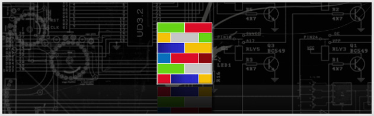

ULTRADEFRAG
An Open Source Defragmenter

ULTRA DEFRAG
- OVERVIEW
- SCREENSHOTS
- DOWNLOAD
- FORUM
- DISCLAIMER
- CREDITS AND LICENCE
- REPORT BUGS
- UD SOURCEFORGE
- VERSION HISTORY
DOCUMENTATION
QUICK LINKS
- LINKS
- ART GALLERY
- VISTA INSTALLATION GUIDE
- VISTA INSTALLATION FAQ
- ULTRADEFRAG WEB LOGOS
- PERSONAL PAGE OF DMITRI
- PERSONAL BLOG OF JUSTIN
The term UltraDefrag is a shorthand for the Ultra Defragmenter and holds no connection with potential owners of registered trademarks or other rights. All trademarks, brands, and names are the property of their respective owners.


Download | Feature List | Vista Installation FAQ | Vista Installation Guide
Latest News - UltraDefrag 3.2 - Addition of some powerful features and improvements
UltraDefrag team now brings its new 3.2 release in to action. Some improvements have been made which makes it even better than ever and loaded with enhancements and features.
- The new 3.2 upgrade has the following features:
- Ultra Fast NTFS scanning feature was added, NTFS analysis becomes approximately 25 times faster now.
- Defragmentaion of additional streams attached to NTFS files was added.
- Information about trash (temporary files) excluded from reports, statistics and cluster map; these files are now completely ignored.
- The \??\ sequence removed from file names in reports.
- UltraDefrag thai translation was made.
- Some important parts of handbook were completely rewritten.
- Scheduler was rewritten in C language; NET framework is not required now!
- Ability to translate Scheduler into foreign languages was added.
- GUI options were moved from udefrag-gui.cmd script to easy to understand guiopts.lua file.
- Debugging information will not be saved on disk since this version of the program (read carefully an appropriate chapter of program's handbook for detailed instructions about kernel mode driver debugging instead)
- Few fatal driver bugs were fixed.
- Driver's reliability was increased.
- Now, UltraDefrag requires less software for its development.
- FOR PROGRAMMERS: Build configurator was rewritten in Lua
- NOTE FOR PROGRAMMERS: to successfully recompile the driver run configure.pl script and click 'Apply patch to MinGW' button once again.
Translate UltraDefrag to different Languages

The Ultra Defrag team needs your help. We need you to <TRANSLATE> UD to different languages. We believe in helping the community and different contributed translations will allow us to help others. Your contribution will be noted on the credits. So quick !~! Translate Now !~!
Here are the details :
Ultra Defrag 3.2 Intro

Release Date - Sep 29th, 2009.
UltraDefrag is powerful Open Source defragmentation tool for Windows NT. It is very fast, because the defragmenting is done by kernel-mode driver. They are three interfaces to them: graphical, console and native. The GUI is very useful, because it represents your filesystem visually as a color coded cluster map. The console is another option for those that prefer the command line. It allows you to run UltraDefrag from the task scheduler and scripts. Finally, the native executable will run at boot time in a manner similar to chkdsk.
The design of UltraDefrag is very simple. There are no skins and other unnecessary stuff. It is a small and powerful program with loads of enhancements and useful features.
It can be used on Windows NT 4.0, Windows 2000, Windows XP, Windows Server 2003, Windows Vista and all of the 64-bit editions of Windows. Also check out VISTA INSTALLATION FAQ to see how to run UltraDefrag on Windows Vista without errors.
- Check the <Overview> for a full list of features and <Screenshots>
DOWNLOAD ULTRADEFRAG

For all 32 bit Operating Systems - Windows NT4.0/2000/2003/XP/Vista/Server2008/Windows Seven

For all 64 bit Operating Systems - x64 editions of Windows NT4.0/2000/2003/XP/Vista/Server2008/Windows Seven

For 64 bit OS Running Intel Itanium processor.